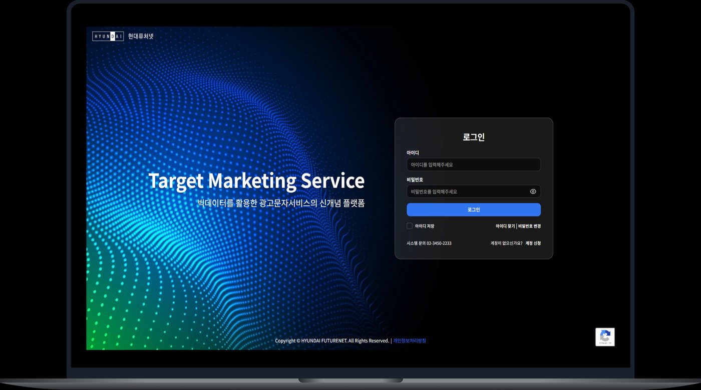
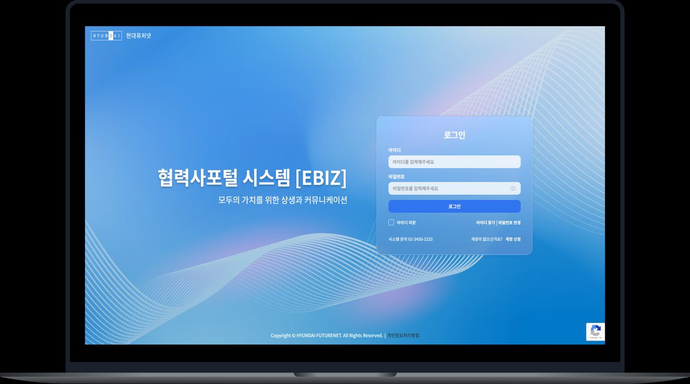

2025.04 – 2025.12 · 기획자(분석/설계/디자인 QA/UAT)
현대퓨처넷 협력사포탈 & TMS 시스템 구축
종이 계약서와 엑셀에 의존하던 협력사 계약·캠페인 운영 프로세스를 100% 디지털 전환한 프로젝트입니다. 15개 매체사별로 상이했던 신청 양식을 표준화하고, 계약 데이터와 발송 로그를 매칭하는 자동 정산 로직을 설계했습니다.
- 통합 — 계약부터 정산까지 전 과정을 단일 워크플로우로 연결
- 유연성 — 셀렉트 기반 서식 조립형 다이나믹 폼 빌더로 신규 매체사 즉시 대응
- 정확성 — 계약 DB·발송 로그 API 연동으로 수기 대조 제거, 정산 데이터 정합성 100% 확보
종이 계약서 기반 프로세스를 온라인화해 문서 관리 리스크를 제거하고 계약 이력을 DB化했으며, 정산 데이터 대조 업무를 자동화된 API 연동으로 대체했습니다.
프로젝트 상세 보기 (배경·화면 설계·트러블슈팅·회고)
배경 및 Pain Point
- 업무 파편화 및 이력 관리 부재 — 전화·메일로 소통 채널이 분산되고 계약서를 수기로 관리해, 업무 히스토리 추적이 불가능하고 담당자 부재 시 업무 연속성이 끊어지는 리스크가 있었습니다.
- 수기 기반의 비효율적 캠페인 운영 — 15개 매체사별로 상이한 신청 양식을 수기 문서로 주고받아, 신규 매체사 입점이나 양식 변경 시마다 시스템을 새로 코딩해야 하는 경직된 구조였습니다.
- 정산 프로세스의 불투명성 — 계약 조건과 발송 데이터가 매칭되지 않는 수동 세금계산서 발행 방식이라, 증빙을 위한 데이터 대조에 막대한 리소스가 들고 휴먼 에러 가능성이 컸습니다.
주요 화면 설계 및 정책
- 메뉴 구조(IA) — 계약 관리(서식 설정·입력 항목 관리) / 캠페인 신청 관리(서식 설정·확정서 설정) / 정산 관리 / 커뮤니케이션(업무 코멘트·전자결재) / 시스템 관리(관리자·권한·감사)로 서비스 영역을 구조화
- 다이나믹 서식 렌더링 규칙 — 계약 유형(매입/매출), 매체사 유형(15종)에 따라 입력 항목 관리에 등록된 항목을 셀렉트 방식으로 조합해 서식을 구성. 매체사·메시지 유형 선택 시 최신 버전 서식이 실시간으로 자동 호출되도록 설계해 오입력 방지
- 권한 및 보안 정책 — 슈퍼/일반/서포트 어드민으로 메뉴 접근권한 및 승인·반려 등 업무 처리 권한을 차등 설계, 대표/서브 ID 계정 구조로 데이터 열람 범위를 지점 단위까지 제한
- 정산 처리 플로우 — 확정 서명 완료 캠페인 기준으로 정산 데이터를 누적하고, 동일 사업자·세금계산서 이메일 기준으로 다건 청구서(1:N)를 일괄 생성한 뒤 증빙 파일과 자동 연동
- 요구사항 정의 프로세스 — RFP 분석 → 현업 담당자 인터뷰 → 요구사항 정의서 작성 → 요구사항 ID·화면 ID를 대조하는 추적표로 변경 이력까지 관리
트러블슈팅 — 변경 관리 위원회(CCB)
Client(현대), On-shore(국내 기획/서버), Off-shore(베트남 개발) 3개 조직이 얽힌 복잡한 협업 구조에서, 발생한 이슈를 주간·월간 회의로 수집하고 변경 관리 위원회(CCB)에서 영향도(공수·일정·비용)를 분석해 승인/반려/보류를 결정하는 프로세스를 운영했습니다. 이를 통해 이해관계자 간 의사결정 체계를 효율화하고, 논의 이력을 Teams·Confluence에 기록해 추적 가능하게 관리했습니다.
성과 & 회고
| 구분 | AS-IS | TO-BE |
|---|---|---|
| 계약 방식 | 오프라인 종이 계약(대면/등기) | 협력사 포털 기반 온라인 계약(전자서명 API 연동) |
| 신청 업무 | 엑셀 기반 수기 작성(이력 관리 불가) | 시스템 내 다이나믹 폼 신청(DB 기반 통합 관리) |
| 정산 연동 | 수기 대조를 통한 수동 정산 | 시스템 데이터 매핑 기반 자동 정산 API 연동 |
"사용자의 자유도보다 시스템의 안정성과 정산 무결성을 위해 설계한 셀렉트 방식의 서식 조립이 결과적으로 운영 리스크를 줄이는 핵심 장치가 되었습니다."
"오프라인에 흩어져 있던 비즈니스 고리를 시스템 안으로 연결하는 것이 기획자의 역할임을 배웠습니다. 종이 계약서가 DB化되는 과정을 통해 데이터가 비즈니스의 자산이 되는 과정을 경험했습니다."